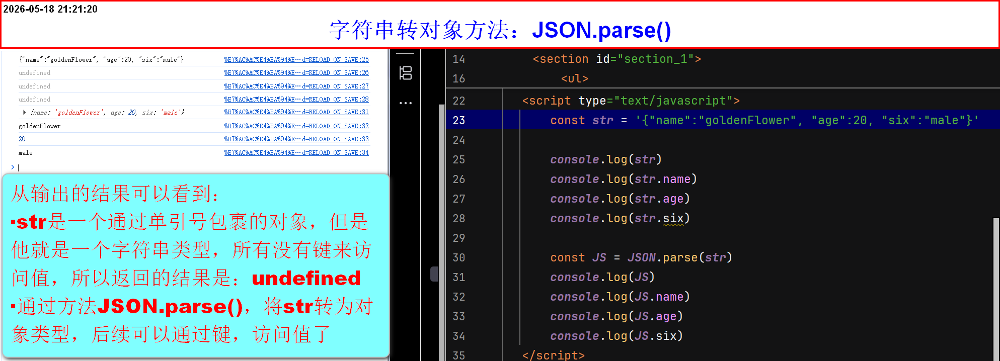
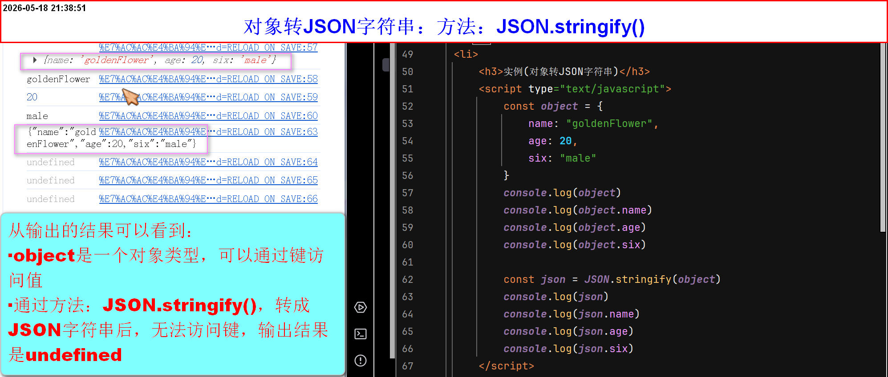

JSON格式字符串
JSON
- 主要用途：方便多个语言，互相交流
- 所有语言，都会以JSON字符串的格式，传给对方，对方自己将JSON字符串转为自己能识别的对象
- 语法(JSON字符串转对象)：
JSON.parse(字面量) - 语法(对象转JSON字符串)：
JSON.stringify(字面量) - 注意：JSON格式是：被引号包裹的对象，其他格式都会报错，如：
'{"name":"goldenFlower", "age":20, "six":"male"}' - 如果外层引号是单引号，内层就是双引号，反之外层是双引号，内层就是单引号，不能同时一种引号表示JSON字符串
- 键必须双引号或单引号包裹(否则报错)，值按数据类型看，字符串需要加，数字不需要，Boolean不需要
- 对象内每个键值对，英文逗号隔开，但是首或尾不能有多余的符号，否则报错
-
实例(JSON字符串转对象)

-
实例(对象转JSON字符串)
